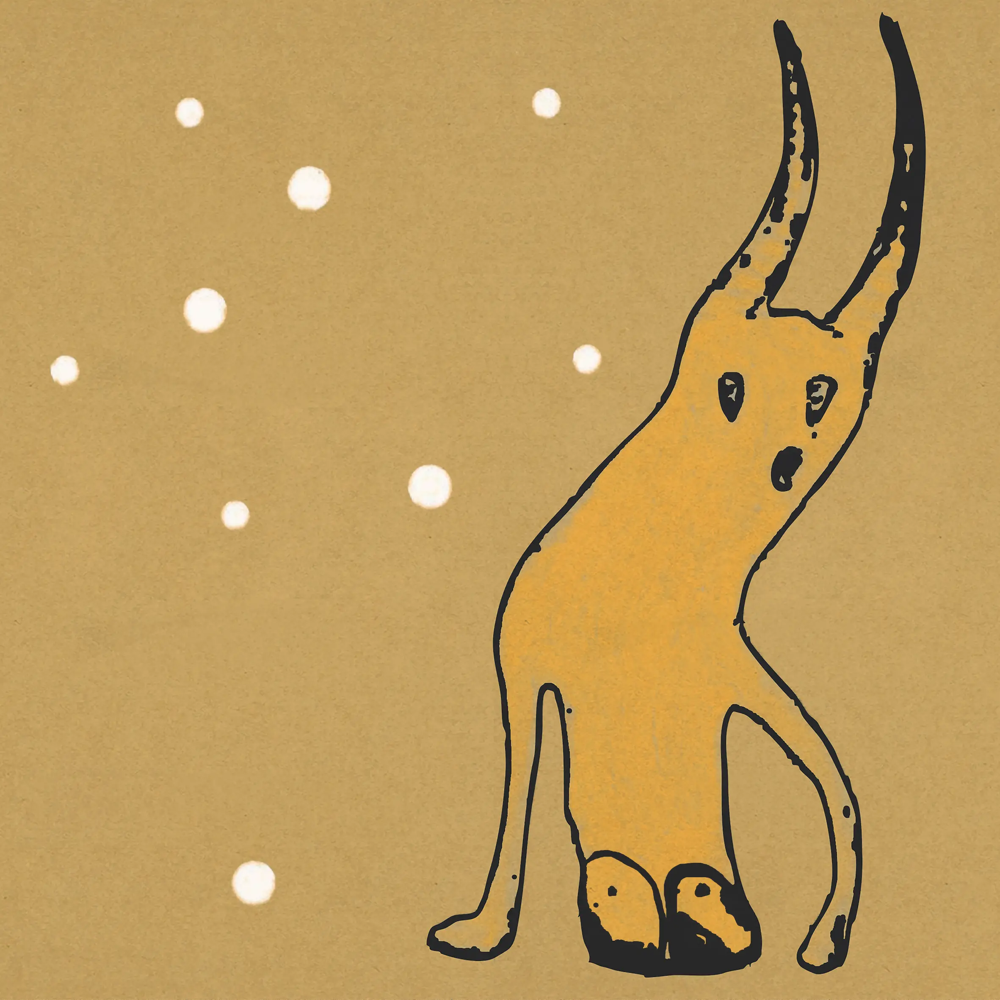

Album#52
階段怪談


《階段怪談》這張專輯是 handycam 成團後發布的首張錄音室専輯，相比另外兩張 《阁楼的影像 & 家》，這張專輯偏搖滾風格多一些，聴起來沒有《阁楼的影像 & 家》那麼隨性，製作上更精良一些，也終於不再全是純器樂的演奏，也有几首有歌詞的歌。
TRACKLIST
泰克十一 (Take 11)
不錯的器樂演奏，開頭的貝斯就挺好聴的。
階段怪談 (Kaidan Kaidan)
也是一首不錯的器樂演奏，层次挺丰富的，好聴。
愚公的心事 (YuGong's Obsession)
你是远方的风景
婆娑在天边的云
只要跟随你脚印
就不会伤脑筋
带我去 oh 带我去 oh please
我要用我的灵魂
交换你的眼睛
烧焦的土地
腐烂的身体
留下你的足迹
遍地的谜题
找不到谜底
迷茫的活下去
带我去 oh 带我去 oh please
我把灵魂都给你
交换你的眼睛
眼里都是你我找不到自己
我慢慢的脱离这地心引力
你有天大的权力
却救不了蚂蚁
我信仰着你
像在信仰空气
我要大步的逃离
你和你的谜语
你口中的话语就要把我墙壁
让我找一个词语来形容你 baby
我只想对你说句
專輯裡時長最長的一首，大體上可以分成三段，也是蠻有层次的，會讓我想到万能青年旅店的《冀西南林路行》。
故鄉 (Root)
徘徊在故乡 流浪
膝盖的伤疤
随太阳褪下
漫无目的
寻找着回忆里模糊的轨迹
旧旧的村庄
拥抱着那些
熟悉又陌生的脸庞
还有月亮
弯弯的河流
载着小船
和无拘无束的的童年一起
驶向远方
驶向工厂
你在哪里我就在哪里
我是你用尽全力也摆脱不了的那片土地
也许是遗迹
到哪我都跟着你…
喜歡安靜舒緩的旋律，鋼琴和薩克斯都好聴，歌聲聴著讓人有些許傷感，2 分 40 左右旋律變得熱烈絢爛，也很棒。
狂鳥記 (Kuangniaoji)
又是一首器樂演奏，喜歡鼓點、貝斯和薩克斯，如果「狂鳥」有代表樂器的話，那就是薩克斯吧。
神秘列車 (Mystery Train)
The story goes like this
Once upon a time
There was a train,
A mysterious train.
I don't know its color, I don't know its number
And no one ever knew where the hell it went
And here come our main characters:
A boy and a girl
Classic, perfect
They took the train heading to nowhere
And no one ever saw them again
I don't even know what happened
But you know what?
I got this letter from them
And I think those words are tremendous
So pure and beautiful
And it says:
The train is leaving
Heading to nowhere
Why don't you get in
Leave here with me
Be the wind
And the trees
I love you
My baby
I need you yes I do
Look at the sky
You painted it blue
There's nothing left to lose
Don't know where to go
But I hope you won't be freaked out
I'm an asshole
Thinking nothing but to make out
Bad at words
Every time I speak
Must be freestyle
When I see your eyes
I know
It's time to reach out
Stay with me
Swallow by the sea
Rushing down the hill
I don't really know
Eeny, meeny, miny, moe
I just wanna be with you
I can't do it on my own
Baby you will never be alone
I give you my words
Don't afraid now
I'm a hiphop man
Imma say it out loud
I'm your biggest fan
And it's not a true story
But a love story still
And I don't know what to say so
Give you my world
歌词大意
传闻是这样说的
很久很久以前
有一列火车
一列神秘的火车
我不知道它的颜色 也无从知晓它的车次
更没有人知道它到底开往何方
现在 我们的主角登场了：
一个男孩 一个女孩
如此经典 如此完美
他们坐上了那列驶向未知的火车
从此消失在所有人的视线里
我甚至不知道究竟发生了什么
但你猜怎么着
我得到了来自他们的一封信
那些字句简直太棒了
如此纯粹 如此美丽
信里这样写道：
车轮已然启动
驶向无往之境
你为何不跨上来
与我一同逃离这里
去幻化成风
去融为树影
我爱你
我的宝贝
我是如此需要你
抬头看看这苍穹
你将它染成蓝色
我们已经没有什么好失去的了
不知道目的地
但希望你不要害怕
我就是个混蛋
满脑子只想着和你亲热
我这人笨嘴拙舌
每次开口说话
都像是一场语无伦次的即兴
但当我瞥见你的眼眸
我便知道
是时候出击了
留在我身边吧
任凭我们被大海吞噬
任凭我们冲下山崖
我其实什么都不懂
就像在数着"点兵点将，点到哪个"的童谣
我只是想和你在一起
靠我一个人撑不下去
宝贝你永远不会再是孤身一人
这是我的誓言
现在别再害怕了
我是个嘻哈男
我会这些话大声说出来
我是你最狂热的粉丝
这或许并不是一个真实的故事
但它依旧是一个动人的爱情故事
我不知道还能再拼凑些什么
于是我把我的整个世界都赠予你
handycam 大概是手持攝影機的意思，「神秘列車」就像是用 handycam 拍的一部短片，風格是偏 VHS (Video Home System) 的，例如像是 汪川《秋千》的 MV。
風之女 (Wind Girl)
Wind from the other land
She never mind
The leftbehinds
She sang：
Wind girl~Wind girl~
歌词大意
她是一道来自异乡的风
她并不拘泥于
已逝去的过往
只是吟唱着：
风之女啊~风之女~
雖然有几句歌詞，但還是更像一首器樂演奏曲，也蠻好聴的，長笛大概代表著風吧，最後的哼唱也不錯。
卡拉歐K之歌 (Karaoke Song)
看着 空白的天
错过了的时间
渐渐地难以分辨
屋顶的夕阳
过去的形状
啊
我就快要遗忘
总是犹豫
难以决定
站在原地 不知往哪去
大口呼吸 新鲜空气
可我就快要死去
直到 一直到
一直到
我遇见了你
你就这样突袭了我的生命
我的生命和我的曾经
一半的一半
就和这首歌一样
也是我拼拼凑凑的图案
遇見了你，生命又重新熱烈起來了。最後的几句話，又讓人覺得原來這麼投入地演唱，是在唱卡拉歐K嗎？